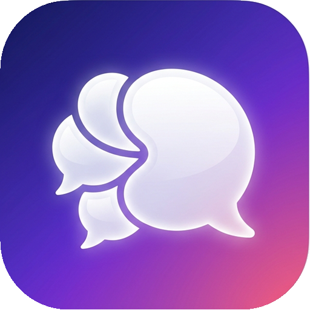

Vuno Connect'e Hoş Geldin 👋
Tüm mesajlaşma servislerini tek bir yerden kolayca yönet. Başlamak için popüler bir servise tıkla veya sol menüdeki + butonunu kullan.

Vuno MessengerTüm mesajlaşma servislerini tek bir yerden kolayca yönet. Başlamak için popüler bir servise tıkla veya sol menüdeki + butonunu kullan.
Sık kullandığın hazır mesajları kaydet; istediğin zaman panoya kopyala.
Aynı servisten istediğin kadar hesap ekleyebilirsin. Her hesap ayrı ve izole bir oturumda çalışır.
Ekran Windows tarafından kilitlendiğinde Vuno da otomatik kilitlenir.
Tüm mesajların, tek uygulamada. Hesap bilgilerin yalnızca bu bilgisayarda, her hesap için ayrı ve izole oturumlarda saklanır. Vuno hiçbir sunucuya veri göndermez.
Hesabınız için kenar çubuğunda görünecek simgeyi özelleştirin.
Devam etmek için PIN kodunu gir